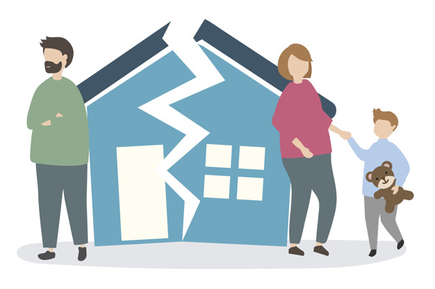
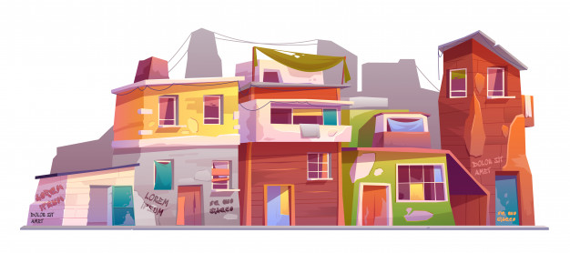
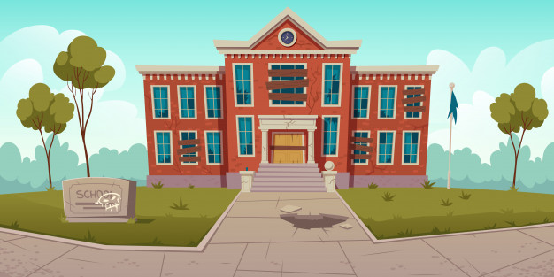

México tiene la mayor tasa de natalidad en menores de edad de todos los países pertenecientes a la OCDE, de acuerdo a un reportaje del periódico El País.
Otro gran problema de los países en vías de desarrollo, que lamentablemente se presenta en México, es el reclutamiento de niños y adolescentes por parte de grupos delictivos.
La pobreza tiene relación directa con el rezago educativo. De hecho, es una de sus causas y, a la vez, una de sus consecuencias. Los niños que pertenecen a familias vulnerables desde el punto de vista económico, son mucho más propensos a no integrarse
a la escolaridad o a abandonarla antes de tiempo.
Los hogares disfuncionales y, sobre todo, desintegrados, son otro detonante del rezago educativo en México y el mundo. Los niños y adolescentes que pertenecen a familias que atraviesan problemas, en ocasiones no cuentan con padres y representantes que
los alienten a integrarse y mantenerse en la escolaridad.

Las poblaciones rurales son altamente propensas al rezago educativo, ya que su acceso a centros de formación suele ser más complejo. En las zonas menos urbanizadas existe una menor oferta educativa. Incluso algunas localidades remotas no cuentan con planteles.
Además, las poblaciones rurales son más impactadas por la pobreza extrema que las urbanas y muchos de sus niños y adolescentes abandonan la escolaridad por labores agrícolas, pesqueras y, en general, laborales.

El trabajo infantil también causa rezago educativo en el país. El diario El Economista señala que en México trabajan casi 2.5 millones de niños y adolescentes de entre 5 y 17 años de edad. Muchos de ellos desempeñan labores y actividades peligrosas o
no recomendables para su edad. De ese total, casi 1 millón no asiste a la escuela para poder cumplir con las asignaciones y funciones laborales.
Un reportaje de bbc.com que cita estadísticas de la OCDE y otros organismos, muestra que el Estado mexicano hizo una inversión récord en educación entre 2013 y 2017, específicamente 47,500 millones de pesos. Sin embargo, todavía están presentes deficiencias
históricas del sistema educativo de la nación. Según este trabajo periodístico, las principales son la falta de mantenimiento de la infraestructura, la disidencia sindical y la falta de dinero para expansión, lo que ha excluido del mundo
académico a miles de niños y adolescentes.

Una de las preguntas que más nos hacen es como formar parte de nuestro equipo, y bueno tomamos en cuenta lo siguiente:
Una de las principales cosas que consideramos es la carera, una carrera a fin para encuestador serían
-Pedagogia
-Psicología
-Comunicaciones
-Ingenieria de software o a fin.
La experiencia laboral si bien es importante, tambien tenemos oportunidades para estudiantes de todas estas ramas que buscan aportar a mejorar el México ideal.
Por supuesto que tomamos en cuenta los perfiles que se adaptan más a los ideales y valores de la plataforma, soft skills que buscamos son:
-Habilidades de comunicación.
-La capacidad del profesional para adquirir, procesar y desarrollar información.
-Capacidad de toma de decisiones y resolución de conflictos.
-Trabajo en equipo.
-Gestión del tiempo (Habilidades de planificación, organización y priorización del trabajo).
-La capacidad de negociación.